정보통신산업기사 (2002-03-10 기출문제)
1과목: 디지털전자회로
1. CR 발진기의 설명으로 옳은 것은?
- 부성저항 특성을 이용한 발진기이다.
- C 및 R로써 정궤환에 의한 발진기이다.
- 압전효과에 의한 발진기이다.
- 부궤환에 의한 비정현파 발진기이다.
(정답률: 알수없음)

2. 그림과 같이 1[㏀]의 저항과 실리콘(Si)다이오드의 직렬 회로에서 다이오드 양단의 전압은 얼마인가?
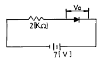
- 0[V]
- 1[V]
- 5[V]
- 7[V]
(정답률: 67%)
3. 그림과 같은 회로에 입력 Vi가 인가되었을 때 출력은 어느 것이 가장 적당한가?
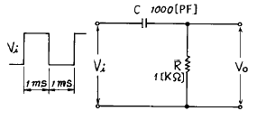
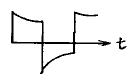
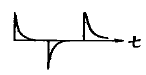
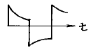
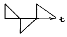
(정답률: 70%)
4. 에미터 접지 트랜지스터 스위칭 회로에서 베이스와 에미터를 단락시키면 출력상태는?
- 즉시 파괴된다.
- ON 상태가 된다.
- OFF 상태가 된다.
- ON 상태도 OFF 상태도 아니다.
(정답률: 59%)
5. 배타 OR(Exclusive OR)회로의 논리식으로 잘못된 것은?
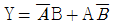
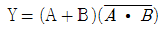
- Y = A+B
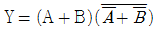
(정답률: 알수없음)
6. 다음 3변수 논리식을 간단히 하면?
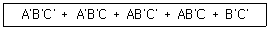
- A
- B
- B'
- C
(정답률: 알수없음)
7. S-R Flip-Flop 을 J-K Flip-Flop으로 바꾸려고 할 때 필요한 게이트는?
- 2개의 AND 게이트
- 2개의 OR 게이트
- 2개의 NAND 게이트
- 2개의 Ex-OR 게이트
(정답률: 알수없음)
8. 바크하우젠의 발진조건에서 증폭기의 증폭도 A=100 이고, 귀환회로의 귀환비율을 β 라고 할 때 귀환비율 β 값은?
- 10
- 1
- 0.1
- 0.01
(정답률: 72%)
9. 그림의 궤환 증폭기에서 C를 제거하면 어떤 현상이 일어나는가?
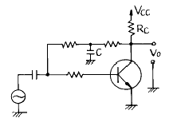
- 이득이 감소한다.
- 이득이 증가한다.
- 발진이 일어난다.
- 안정도가 향상된다.
(정답률: 28%)
10. JK F/F(flip-flop)의 2개의 입력이 똑같이 1이고, 클럭펄스가 계속 들어오면 출력은 어떤상태가 되는가?
- Set
- Reset
- Toggle
- 동작불능
(정답률: 70%)
11. 그림과 같은 회로의 입력에 계단전압(step voltage)을 인가할 때 출력에는 어떤 파형의 전압이 나타나는가? (단, A는 이상적인 연산증폭기이다.)
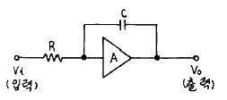
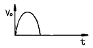
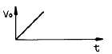
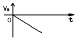
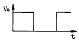
(정답률: 50%)
12. 동조형 증폭기에서 공진주파수 fo, 주파수 대역폭 B, 코일의 Q 와의 관계를 설명한 것중 맞는 것은?
- B 와 fo 는 비례한다.
- Q 와 fo 는 반비례한다.
- Q 와 fo 의 자승에 비례한다.
- Q 는 B 의 자승에 비례한다.
(정답률: 알수없음)
13. SSB(Single Side Band)에 관한 설명 중 맞는 것은?
- LSB와 USB로 구성된다.
- 전력 손실이 높다.
- 점유주파수 대폭이 반으로 줄어들고, 전력소모도 훨씬 적어진다.
- DSB에 비하여 진폭이 2배로 늘어난다.
(정답률: 알수없음)
14. 입출력장치를 마이크로컴퓨터에 연결하는 데에 필요한 특수한 장치는?
- 인터페이스(interface)회로
- 레지스터(register)회로
- 누산기(accumulator)회로
- 계수기(counter)회로
(정답률: 알수없음)
15. 다음 회로에서 Vi – Vo 특성곡선을 올바르게 나타낸 것은?
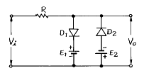
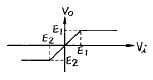
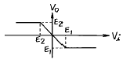
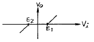
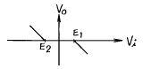
(정답률: 60%)
16. 다음 논리식은 무슨 법칙을 활용하여 전개한 것인가?
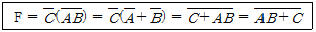
- 보수와 병렬의 법칙
- 드몰간(De Morgan)의 법칙
- 교차와 병렬의 법칙
- 적(積)과 화(和)의 분배의 법칙
(정답률: 60%)
17. 트랜지스터의 증폭기의 입력전력이 4[㎽]이고, 출력전력이 8[W]일 때 이 증폭기의 전력이득은?
- 20[㏈]
- 33[㏈]
- 65[㏈]
- 85[㏈]
(정답률: 46%)
18. TTL(Transistor-Transistor Logic)의 특징을 설명한 것으로 틀린 것은?
- Fan - out를 많이 할수 있다.
- 논리회로중 응답속도가 가장 늦다.
- 출력 임피이던스가 낮다.
- 잡음 여유도가 낮다.
(정답률: 55%)
19. 그림과 같은 연산 증폭기의 증폭도는? (단, Ri =∞, AV =∞)
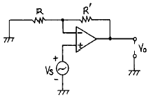
- -R/R'
- -R'/R
- (R + R')/R
- R/(R + R')
(정답률: 알수없음)
20. 어느 반송파를 정현파 신호에 의하여 100[%] 진폭변조하였을 때 피변조파 출력전력 Pm과 반송파 전력 Pc와의 관계는?
- Pm = Pc
- Pm =
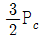
- Pm = 2Pc
- Pm = 3Pc
(정답률: 알수없음)
2과목: 정보통신기기
21. 비디오 텍스의 국제표준 기술방식이 아닌것은?
- 알파 모자이크 방식
- 알파 지오 메트릭 방식
- 알파 캡틴 방식
- 알파 포토 그래픽 방식
(정답률: 알수없음)
22. 다음중 정현파 발진기가 아닌 것은?
- LC 발진기
- 수정발진기
- CR 발진기
- 멀티 바이브레이터
(정답률: 55%)
23. 통신제어장치 중 회선제어부에서 하는 일이 아닌 것은?
- 모뎀 인터페이스의 제어
- 전송제어문자의 식별
- 오류검출부호의 생성과 수신데이터의 오류검출
- 송수신 데이터의 버퍼링
(정답률: 19%)
24. 문서를 정형화, 표준화된 표준양식과 코드를 이용하여 컴퓨터가 처리 가능한 형태로 작성한 후 컴퓨터 상호간 직접통신에 의해 교환되는 시스템을 무엇이라 하는가?
- MHS
- EDI
- Telemetering
(정답률: 20%)
25. Modem의 기능이 아닌 것은?
- 타이밍 동기신호 추출기능
- 등화 및 자동이득 조절기능
- 스크램블 및 디스크램블 기능
- 에러 검출 기능
(정답률: 알수없음)
26. ATM 교환방식의 특징이 아닌 것은?
- 비동기방식 이다.
- 다양한 속도를 제공한다.
- 음성,화상,데이터 등의 서비스를 제공할 수 있다.
- 정보의 지연은 일정하다.
(정답률: 알수없음)
27. 화상통신 서비스 종류 중 센터와 단말기간의 통신(C-E형 서비스)인 것은?
- 팩시밀리
- 텔레비전
- 텔레라이팅
- 비디오텍스
(정답률: 알수없음)
28. 정보통신용 단말기의 표시장치중 플래즈마 표시장치(plasma display panel)의 설명으로서 옳지 않은 것은?
- 방전관의 원리를 응용
- 휘도는 높으나 수명이 짧은 편이다.
- 한 쌍의 유리기판 위에 전극,유전체층이 있다.
- 구동회로가 복잡하고 가격이 비싸다.
(정답률: 알수없음)
29. 통신위성 지구국에 설치하는 안테나로 가장 적당한 것은?
- 헤리컬 안테나
- 야기 안테나
- 카세그레인 안테나
- 비버리지 안테나
(정답률: 30%)
30. FM 이 AM 보다 충격성 잡음에 강한 이유는?
- 진폭제한기를 사용하기 때문이다.
- 스켈치 회로를 사용하기 때문이다.
- 대역폭이 넓기 때문이다.
- IDC회로를 사용하기 때문이다.
(정답률: 알수없음)
31. 현재 사용되는 대부분의 팩시밀리의 전송방식은?
- G3
- G2
- G1
- G0
(정답률: 58%)
32. CCTV의 기본구성 중 촬상장치에 해당되지 않은 것은?
- 광학렌즈계
- 지지보호계
- TV모니터계
- TV카메라계
(정답률: 25%)
33. 다음 CATV의 기본구성요소중 가장 핵심으로써 수신안테나에서 수신한 각 채널의 반송신호를 VHF대로 재변환하여 중계전송망을 통해 가입자에게 송출하는 장치는?
- 헤드엔드
- 간선제어기
- 프레임메모리
- 게이트웨이 프로세서
(정답률: 64%)
34. 통신위성의 통신기기가 아닌 것은?
- 안테나(Antenna)
- 태양전지
- 중계기(Transponder)
- 송,수신기
(정답률: 77%)
35. 다음 공동이용기의 종류에 해당되지 않는 것은?
- 변복조기 공동이용기
- 디지털 서비스 유니트 공동이용기
- 선로공동이용기
- 컴퓨터 소프트웨어 공동이용기
(정답률: 알수없음)
36. 데이터 통신에서 단말장치의 전송제어 장치에 해당하지 않는 것은?
- 회선제어부
- 입출력제어부
- 회선접속부
- 출력변환 제어부
(정답률: 42%)
37. 멀티미디어 단말장치가 갖추어야할 구성요소가 아닌 것은?
- 미디어입출력장치
- 압축,복원장치
- 오디오,비디오 캡처장치
- 비동기 디지털 전송장치
(정답률: 40%)
38. 다중 통신 방식이 아닌 것은?
- PCM
- FDM
- TDM
- WDM
(정답률: 알수없음)
39. 정보단말기로서 휴대전화기능, 휴대형 컴퓨터기능, 팩스기능, 전자수첩기능을 갖춘 차세대 단말기는?
- PC-FAX
- PDA
- PCS
- MIX-MODE
(정답률: 50%)
40. 컴퓨터시스템에서 주어진 기억용량 보다 큰 프로그램을 사용할 수 있는 기법은?
- Virtual Memory
- Cache Memory
- Assiative Memory
- Dynamic Memory
(정답률: 64%)
3과목: 정보전송개론
41. 다음 그림의 전송방식은?
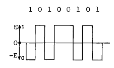
- 단류 NRZ 방식
- 복류 NRZ 방식
- 단류 RZ 방식
- 복류 RZ 방식
(정답률: 알수없음)
42. PCM방식에서 송신순서로써 옳은것은?
- 음성 - 표본화 - 양자화 - 부호화 - 전송로
- 음성 - 양자화 - 표본화 - 부호화 - 전송로
- 음성 - 표본화 - 부호화 - 양자화 - 전송로
- 음성 - 양자화 - 부호화 - 표본화 - 전송로
(정답률: 알수없음)
43. 광섬유 케이블의 심선구조에 있어서 코어의 굴절률과 클래딩의 굴절률 중에서 어느 쪽이 더 높은가?
- 코어가 더 높다.
- 클래딩이 더 높다.
- 코어와 클래딩이 동일하다.
- 코어가 높은 것도 있고 클래딩이 높은 것도 있다.
(정답률: 67%)
44. 동기식 전송의 특징으로 옳지 않은 것은?
- 전송 정보묶음 단위로 동기문자를 가진다.
- 한 묶음으로 구성된 문자들 사이에 휴지(idle)간격이 없다.
- 사용 단말기는 버퍼가 없는 단말기를 사용한다.
- 클럭을 동기신호로 사용한다.
(정답률: 42%)
45. 직류 및 저주파 성분이 감소하여 전송로에서 발생하는 저주파 차단 영향을 받지 않는 신호방식은?
- 복류 RZ 방식
- 복류 NRZ 방식
- 바이폴라 방식
- 양극방식
(정답률: 알수없음)
46. ISO에서 규정하는 전송제어 문장 중 서로 관련성이 먼 것은?
- SOH-헤딩의 시작
- ETX-텍스트의 종료
- ACK-긍정응답
- DLE-회선의 절단
(정답률: 55%)
47. 다음은 디지털 전송방식의 특징을 설명한 것이다. 틀린 것은?
- 아날로그 전송에 비하여 전송거리가 크고, 양질의 전송 품질 제공이 가능하다.
- 재생중계가 가능하여 아날로그 전송보다 주위의 잡음이나 방해에 강하다.
- 전송에 필요한 주파수 대역폭이 아날로그 전송보다 감소 하였다.
- A/D, D/A 변환 기능과 송수신간의 동기가 필요하다.
(정답률: 77%)
48. 금속선로인 채널의 데이터 속도는 초당 송출 비트수이다. 데이터 속도와 관계 없는 것은?
- 신호전력
- 잡음전력
- 채널의 대역폭(HZ)
- 선로부호
(정답률: 알수없음)
49. 디지탈 변조의 PSK 에 해당되는 것은?
- 반송파의 위상에 변화가 없다.
- 2개의 주파수를 할당하여 변화시킨다.
- 주파수, 위상이 변하지 않는다.
- 반송파의 주파수가 변하지 않는다.
(정답률: 40%)
50. 다음은 신호대 잡음비(S/N)의 영향의 정도를 나타낸 것이다. 무잡음 상태에 가장 가까운 것은 몇 [dB]인가?
- 0
- 10
- 30
- 40
(정답률: 알수없음)
51. 어떤 코드의 최소해밍거리(minimum Hamming distance)가 8일 때, 수신측에서 정정할 수 있는 오류의 개수는?
- 3
- 4
- 5
- 8
(정답률: 알수없음)
52. 동축케이블에서 가장 감쇠가 적게하기 위해서는 내부도체의 외경(d)과 외부도체의 내경(D)과의 비(ratio) D/d의 값을 얼마로 만드는 것이 가장 좋은가?
- 1.8
- 3.6
- 5.8
- 7.2
(정답률: 46%)
53. 데이터 전송에서 데이터신호를 변조하지 않고 디지털 형태로 그대로 전송하는 방식은?
- 직류전송
- 반송대역전송
- 교류전송
- 베이스밴드전송
(정답률: 43%)
54. 다음 그림은 어떠한 변조의 복조과정을 나타낸 것인가?
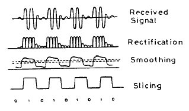
- ASK
- PSK
- FSK
- QAM
(정답률: 20%)
55. 해밍코드(7,4)의 4비트의 용도는?
- 검사용
- 데이터
- 예비용
- 에러위치 표시용
(정답률: 알수없음)
56. 통신선로중 광섬유 선로가 현대통신에서 각광을 받는데 이 같은 광섬유의 특징이 아닌 것은?
- 경량성으로 작업능률이 양호하다.
- 무유도성으로 전자유도의 영향이 없다.
- 통신속도가 빨라 대용량 전송이 가능하다.
- 차폐용 동 테이프를 사용하여 누화가 없다.
(정답률: 알수없음)
57. 일반적인 메시지 블록의 형태중 BCC(Blcok check character)의 체크 범위가 아닌 것은?
- STX
- TEXT
- ETX
- SOH
(정답률: 47%)
58. 양자화 잡음의 비율은 입력진폭에 따라 어떠한가?
- 작을 때가 커진다.
- 클 때가 커진다.
- 관계없이 일정한다.
- 관계없이 커진다.
(정답률: 42%)
59. 디지틀 신호 중계기의 기본 기능이 아닌 것은?
- 파형성형(Reshaping)
- 식별재생(Regenerating)
- 정시(Retiming)
- 복구(Recovery)
(정답률: 59%)
60. 진폭 편이 변조기의 구성요소가 아닌 것은?
- 펄스 발생기
- 저역여파기
- 변조기
- 위상지연기
(정답률: 60%)
4과목: 전자계산기일반 및 정보설비기준
61. 자료의 외부적 표현방식인 EBCDIC 코드로 표현할 수 있는 최대 문자수는?
- 36자
- 120자
- 256자
- 282자
(정답률: 50%)
62. 정보통신 속도의 단위는?
- 밀리초또는 헤르츠
- 워드 또는 캐릭터
- 비트 또는 블록
- 보오 또는 비트/초
(정답률: 60%)
63. 순서도의 작성 시기는?
- 입.출력 설계 후
- 타당성 조사 후
- 프로그램 코딩 후
- 자료 입력 후
(정답률: 46%)
64. 고압 전력선이 통신회선에 전력유도 영향을 주는 경우 이에 대한 방지조치를 하여야 한다. 이때 이상시 유도위험전압의 제한치는?
- 110[V]
- 300[V]
- 600[V]
- 650[V]
(정답률: 17%)
65. 전화급 평형회선에서 2회선 사이의 원단누화의 요해성 누화감쇠량 한계치는?
- 10[dB] 이상
- 68[dB] 이상
- 22[dB] 이상
- 108[dB] 이상
(정답률: 알수없음)
66. 다음 중 정보의 수집.가공.저장.검색.송신.수신중에 정보의 훼손.변조.유출등을 방지하기 위한 관리적· 기술적 수단을 강구하는 것을 정의하는 용어는?
- 정보화
- 정보통신
- 정보보호
- 정보자원
(정답률: 40%)
67. 프로그램 카운터가 명령 번지 부분과 더해져서 유효 번지가 결정되는 주소지정 방식은?
- 상대 번지 모드
- 간접 번지 모드
- 인덱스 번지 모드
- 베이스 레지스터 번지 모드
(정답률: 알수없음)
68. 오퍼레이팅 시스템의 성능 평가중 데이터 처리를 위하여 시스템이 필요하게 되었을 때 시스템을 어느 정도 빨리 사용할 수 있는가를 나타내는 것은?
- 처리능력
- 응답시간
- 사용가능도
- 신뢰도
(정답률: 10%)
69. 형식승인의 표시는 전기통신기자재의 표면에 보기쉬운곳에 쉽게 지워지지 아니하도록 표시하여야 한다. 다음 중 형식승인 표시에 포함되지 않는 것은?
- 제조년월일
- 제조자명
- 승인(인증)번호
- 제조장소명
(정답률: 알수없음)
70. 불온통신을 억제하고 건전한 정보문화를 확립하기 위하여 설치한 기구는?
- 통신위원회
- 한국정보문화센터
- 정보통신진흥협회
- 정보통신윤리위원회
(정답률: 알수없음)
71. 우리나라의 전기통신은 누가 관장하는가?
- 국무총리
- 정보통신부장관
- 통산산업부장관
- 한국통신사장
(정답률: 67%)
72. 다음 중 인터럽트(interrupt)가 발생되지 않는 경우는 어느 것인가?
- 오퍼레이터의 필요시 콘솔인터럽트 key 조작에 의해 자료를 입력하여, 현재 수행되는 프로세서를 제어할 때
- 연산결과 오버플로(overflow)가 발생했을 경우 또는 0으로 나누었을 경우
- 입출력장치의 착오에 의하여 오류가 발생하는 경우
- 인덱스 주소방식에 의해 메모리의 자료를 다른 영역의 메모리에 이동시킬 때
(정답률: 알수없음)
73. 정보전송레벨을 절대단위로 나타낸 것은?
- dB
- dBm
- Nep
- Watt
(정답률: 47%)
74. 다음 중 정보통신공사업법령에 의한 정보통신공사가 아닌 것은?
- 전화국의 수전설비 설치공사
- 경부고속철도의 정보통신시스템 설치공사
- 이동통신회사의 기지국과 교환기를 광케이블로 연결하는 공사
- 아파트 지하주차장의 방범을 위한 폐쇄회로텔레비전(CCTV) 설치공사
(정답률: 40%)
75. (01001101)2 의 1의 보수는?
- (10110010)2
- (01001110)2
- (11001101)2
- (10110011)2
(정답률: 알수없음)
76. 다음 중 도형이나 사진 등을 기억장치로 읽어들일 수 있는 장치는?
- keyboard
- scanner
- mouse
- OCR
(정답률: 60%)
77. 다음 중 전자계산기 중앙처리장치의 구성요소가 아닌 것은?
- 주기억장치
- 제어장치
- 연산장치
- 전원장치
(정답률: 알수없음)
78. 다음에서 접근 속도(access time)가 빠른 순서로 나열된 것은?
- 자기코어 - 자기디스크 - 자기드럼
- 자기버블 - 캐시 - 자기디스크
- 자기코어 - 캐시 - 자기디스크
- 캐시 - 자기코어 - 자기드럼
(정답률: 60%)
79. 다음 중 정보의 개념을 하위 개념에서 부터 상위 개념으로 나열한 것은?
- 필드(Field) → 레코드(Record) → 파일(File) → 문자(Character)
- 레코드(Record) → 파일(File) → 필드(Field) → 문자(Character)
- 문자(Character) → 필드(Field) → 레코드(Record) → 파일(File)
- 파일(File) → 문자(Character) → 필드(Field) → 레코드(Record)
(정답률: 50%)
80. 정보화추진위원회의 심의 사항이 아닌 것은?
- 정부의 정보화기본계획에 관한 사항
- 정보화촉진기금의 운용방침에 관한 사항
- 초고속 정보통신기반의 구축과 이용에 관한 사항
- 국가 기간 정보통신망사업자의 지정에 관한 사항
(정답률: 알수없음)